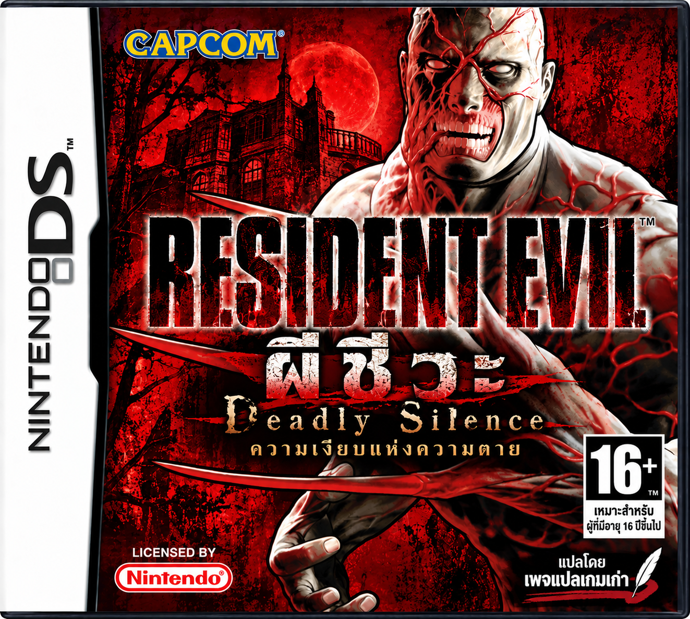

Resident Evil: Deadly Silence
Nintendo DS · ภาษาไทย v1.0 · Europe / EUR
ภาพปกภาษาไทยโดยเพจแปลเกมเก่า
Resident Evil: Deadly Silence — ความเงียบแห่งความตาย ฉบับภาษาไทย
ฟอนต์ไทย CotM 12×12 · แปลบทสนทนา เมนู ไอเทม ข้อความ และเอกสารในเกม
ใช้ ROM อะไร?
ใช้ Resident Evil: Deadly Silence (Europe) (En,Fr,De,Es,It) ต้นฉบับที่ยังไม่ดัดแปลงเท่านั้น
- ภูมิภาค Europe (EUR)
- รหัสเกม ABHP
- ขนาด 134,217,728 ไบต์ (128 MiB)
- ไฟล์ .nds — หากอยู่ใน ZIP ให้แตกไฟล์ก่อน
เกี่ยวกับฉบับนี้
- ฉบับ CotM 12×12 Thai Font Edition
- แปลข้อความเกม 1,527 รายการ
- ไฟล์แพตช์ BPS สร้าง ROM ภาษาไทยในอุปกรณ์ของคุณ
- เลือก ROM Europe ต้นฉบับของคุณ
- กด “สร้าง ROM ภาษาไทย” และรอตรวจสอบ
- กดดาวน์โหลดไฟล์ .nds ภาษาไทย แล้วเปิดในอีมูเลเตอร์หรือเครื่องที่รองรับ
ไฟล์ ROM ประมวลผลบนอุปกรณ์ของคุณ ไม่ถูกอัปโหลดขึ้นเว็บ
กำลังโหลดแพตช์…
ตอนนี้เปิดหน้านี้จากไฟล์ในเครื่อง (file://) จึงใช้ตัวแปะแพตช์ออนไลน์ไม่ได้ กรุณาเปิดหน้าเว็บผ่าน HTTPS หลังเผยแพร่ หรือผ่านเว็บเซิร์ฟเวอร์ในเครื่อง
ดาวน์โหลด ROM ภาษาไทยค่า SHA-256 สำหรับตรวจสอบ ROM
ต้นฉบับ Europe6ecc75cee77f154902cb8c4c08f9d5bed5dce52d02408c4f1a7704a52bd47ce6
ไฟล์ภาษาไทย3177b962e453069a96181ad56af492fdd4d9451b0f2d8a4c89fef8df7022b39c